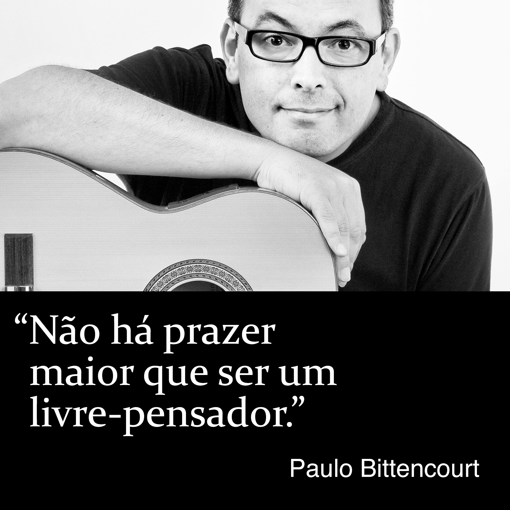

Biografia de Paulo Bittencourt
Formação Profissional
Como garoto, Paulo Bittencourt sonhava em ser desenhista de histórias em quadrinhos e desenhos animados. Com treze anos de idade, trabalhou no período vespertino como ilustrador num jornal e numa empresa de artes gráficas de sua cidade natal, Castro, no Paraná.
Em 1989, após cinco semestres numa Faculdade de Teologia, em São Paulo, teve dúvidas sobre tornar-se pastor, abandonou os estudos e se mudou para a Europa, vivendo temporariamente em Portugal, França, Inglaterra e Alemanha até, no ano seguinte, ir estudar alemão na Áustria, onde se radicou.
Em 1992, sem formação musical alguma, passou no teste de admissão das Faculdades de Canto Solo e Ópera do Conservatório da Cidade de Viena. Em seu exame final, interpretou o Conde de Almaviva, na ópera As Bodas de Fígaro, de Wolfgang Amadeus Mozart.
Atividade Profissional
Durante os estudos, Paulo Bittencourt cantou em corais profissionais, com apresentações na Áustria, Israel, Itália, Japão e Estados Unidos, como o Coral Concentus Vocalis e a Orquestra Filarmônica de Israel, sob a regência de Theodor Guschlbauer, em Tel Aviv e Jerusalém, o Coral Arnold Schoenberg e a Orquestra Filarmônica de Viena, sob a regência de Seiji Ozawa, na Konzerthaus de Viena e no Carnegie Hall de Nova Iorque, e uma produção independente de Orfeu nos Infernos, de Jacques Offenbach, com uma turnê de um mês pelo Japão.
Como solista, deu recitais na Sala Schubert da Konzerthaus de Viena, com obras de Heitor Villa-Lobos, e na Sala Bösendorfer de Viena, com obras de Villa-Lobos e Oscar Lorenzo Fernández. Apresentou-se em diversos teatros, como o Stadttheater Baden, na Áustria, e o Theater Akzent de Viena, interpretando O Rei, na ópera A Mulher Sábia, de Carl Orff, O Pai, em Hänsel und Gretel, de Engelbert Humperdinck, Fígaro, em O Barbeiro de Sevilha, de Gioachino Rossini, e Guglielmo, em Così Fan Tutte, de Mozart.
Em 1995, foi contratado pelo maior teatro da língua alemã, o Burgtheater de Viena, onde cantou e atuou em peças como A Ópera dos Três Vinténs, de Bertolt Brecht, Orfeu nos Infernos, de Offenbach, Ein Sportstück, de Elfriede Jelinek, e Tróilo e Créssida, de William Shakespeare.
Autodidata no violão, é intérprete dos clássicos da bossa nova, como as composições de Antônio Carlos Jobim e Vinícius de Moraes, e das canções de Chico Buarque.
Como artista de voice-over, narra vídeos institucionais de companhias internacionais, como a Plasser & Theurer, a TGW Logistics, a Doka e a Lyoness.
Como fotógrafo, seus temas prediletos são fotografia de rua, retratos e paisagens. Foi contratado para fotografar uma orquestra e uma famosa cantora de ópera, durante uma das apresentações dela na Volksoper de Viena.
Livros
Paulo Bittencourt se vê como livre-pensador e é o autor dos livros Liberto da Religião, Perdendo Tempo Com Deus e Com Zeus Não Se Brinca.
Vídeos
Paulo Bittencourt difunde o Livre Pensamento também através do seu canal↗︎ do YouTube.
Combate à Discriminação
Em 2015, após ter vivido 25 anos na Áustria, Paulo Bittencourt decidiu se naturalizar austríaco e descobriu que residência permanente e perfeito domínio do alemão não mais eram suficientes. Alguns anos antes, a lei fora endurecida para exigir dos estrangeiros altos rendimentos. Pela nova lei, 70% dos próprios austríacos não teriam os meios para se naturalizar. À vista dessa evidente incoerência, que, além de tudo, é discriminatória, pois impede imigrantes legalizados e integrados de participar do processo democrático (votar), foi tema de diversas reportagens de TV, rádio, jornais e revistas. Um discurso sobre seu caso foi proferido no Parlamento Austríaco. A SOS Mitmensch, uma organização austríaca de direitos humanos, espalhou por toda Viena cartazes com sua foto. Não muito tempo depois, tornou-se cidadão da Áustria.
Tchã, tchã, tchã, tchããããã…
Paulo Bittencourt pesquisou a origem e o significado de seu nome de família e ficou espantado com o que descobriu.